1 Introduction
This module provides basic concepts and background related to the fixed wireless access (FWA) network architecture. It shows the different segments of the network, the interactions between them and the options to implement each network segment. All this will serve to understand how to define the network architecture for your network based on the characteristics of your Tribal Land (such as coverage target areas, available spectrum, and population).
Figure 1 displays a summary of the Tribal Land Journey, highlighting the step where the Network Architecture is established (step 4).
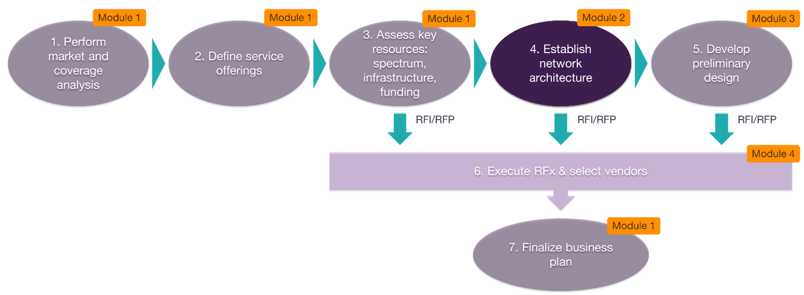
Figure 1 — Network Architecture module as part of the Tribal Land Journey.
Once the spectrum strategy and the coverage targets have been defined which is supported by module 1 (Business & Financial Plans), the next step is to define the most suitable network architecture (which will cover the access, backhaul and core segments of the network) as well as a general recommendation of the internet protocol (IP) and system architectures.
This module provides a guide to generate these outputs for your network. After this is done, the defined architectural option will serve as the starting point and main reference to develop the preliminary design of the network (step 5). Alternatively, you may decide to engage with the vendor community through a request for information (RFI) or request for proposals (RFP) process (step 6) to assess and possibly select vendors to design and deploy the network, based on your architecture.
2 Fixed Wireless Architecture Essentials
Fixed wireless access (FWA) utilizes wireless communication technologies to provide broadband services to fixed locations such as homes or business. FWA is a lower cost alternative to wireline architectures based on fiber or coaxial cable to provide last mile connectivity (connectivity between the base station and the end user).
The typical FWA architecture is shown in Figure 2.
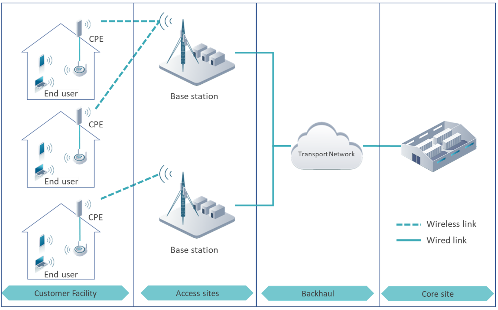
Figure 2 — Fixed wireless access network principle.
In an FWA network customer premises equipment (CPE) is installed at each home. Each CPE establishes a wireless communication a base station (BS) to access the network. Then, the BS communicates, via a backhaul link in the transport network, to the core site. The core site is the segment in charge of managing all communications towards the internet.
The FWA network is composed by three main segments: the radio access network (RAN) comprised by the CPEs and the BSs, the transport or backhaul network and the core site. Each of these segments is briefly described below.
A. RAN
Figure 3 displays a high-level view of the RAN for an FWA network.
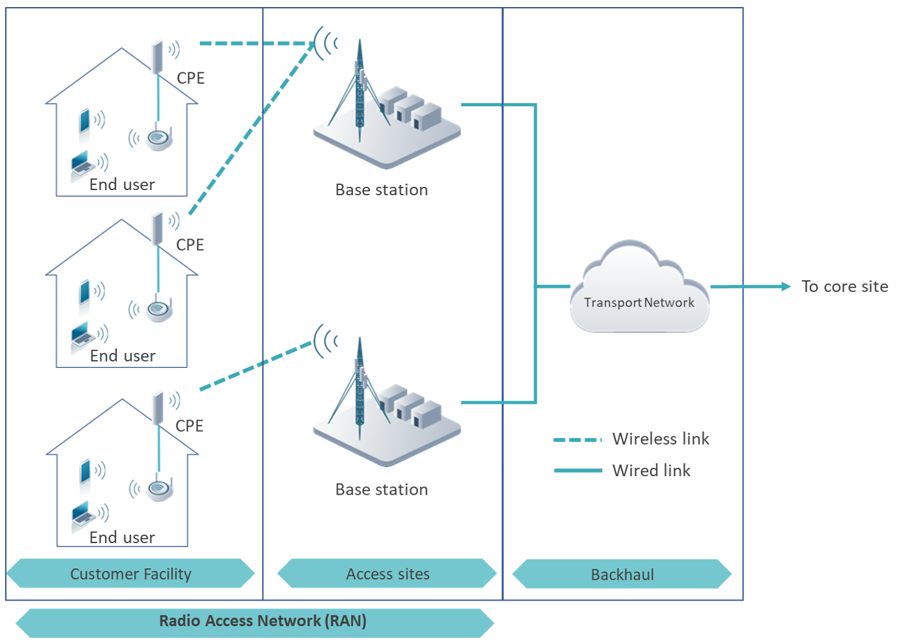
Figure 3 — High-level view of the RAN.
B. Transport/Backhaul
The transport network provides a backhaul connection between every BS on the RAN to the core site (which will be described in point C).
Transport network can be implemented with three different technologies:
Figure 4 displays a high-level view of the backhaul architecture showing the three mentioned technologies.
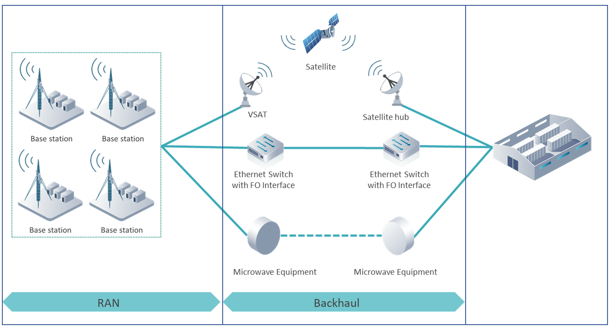
Figure 4 — High-level view of the backhaul architecture.
C. Core / Aggregation
The core site is the point of aggregation for the traffic in the network and it is equipped with a high-speed internet connection provided by a larger internet service provider (ISP). Equipment at the core site manages subscriber connections toward internet. It also provides security and integrity to each subscriber data.
To this end, two main elements are located at the core site:
Together the aggregation router and the switch are best known as routing and switching (R&S) equipment. Additional elements can compose a core site when considering LTE as the RAN technology. Details about these elements will be provided in section 2.3.1.
Figure 5 displays an overview of the core network.
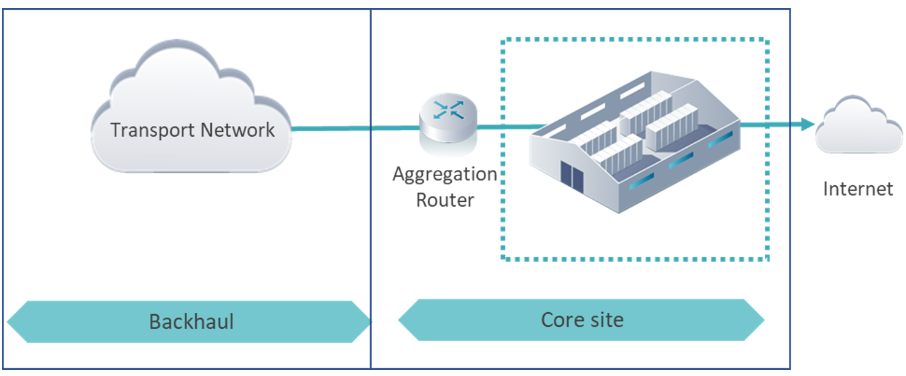
Figure 5 — High-level view of the core architecture.
The term of 'systems' refers to specialized software tools that have two main tasks: Firstly, systems act as an intermediary interface between the users and the administrators of the network (e.g., problem reporting, billing). Secondly, systems facilitate the monitoring and operation of the network. For big operators, network systems are known as operational support system (OSS) and the business support system (BSS).
The main elements of the OSS/BSS in the FWA architecture are:
Figure 6 displays an overview of the systems architecture and its integration into the FWA network.
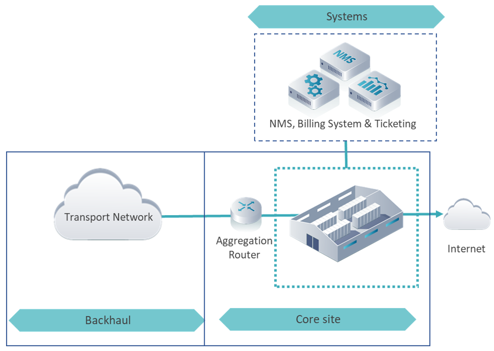
Figure 6. — Systems architecture integration into the network.
In the following sections, a closer look into the network segments (e.g., RAN, Core, Backhaul, IP, Systems) and basic guidance to understand the architectural options and its implications is provided.
2.1 Radio Access Network Architecture
The RAN provides radio access to the CPE to reach the core network and the services offered (such as internet access). The RAN comprises all the base stations (BS) deployed over the area where network services will be provided.
The RAN architecture is defined based on the following attributes:
2.1.1 RAN technology
The RAN can be deployed using two different technologies:
1. Long term evolution (LTE)
LTE is the fourth generation of mobile communications. The broadband capabilities of LTE allow it to provide high-speed and reliable radio access. Moreover, LTE technology has been standardized by the third-generation partnership project (3GPP), allowing the RAN to be built using equipment from different suppliers.
However, the implementation of an LTE RAN forces the network architecture to consider an evolved packet core (EPC) as part of the core network. Further details about the EPC will be addressed in section 2.3.
2. Time division multiple access (TDMA)
TDMA is a transmission technique in which each network user is allocated a dedicated time slot by the BS to send and receive data. In this way, all users can access network services without interfering with each other.
However, in the FWA context, TDMA is used to classify equipment suppliers that implement proprietary transmission schemes based on the TDMA principle. This means that both the base stations and CPEs must be sourced from the same equipment supplier.
On the other hand, a TDMA RAN does not require a specific architecture for the core network. It only requires the R&S equipment to achieve communication toward internet.
2.1.2 Base station architecture
As stated before, one the main element of the RAN is the BS, which provides wireless access to the end user. Each BS is composed of three functional blocks: antenna, remote radio unit (RRU) and baseband unit (BBU). Functionalities of each block are described below:
A. BBU
This element is in charge of the digital processing of the wireless signal and the connection to the backhaul equipment. Every BS includes at least one BBU.
B. RRU
It is placed between the BBU and the antenna and performs a double function:
The number of RRUs in one BS determines its number of sectors. Each sector is meant to cover a determined area of the Tribal Land and provide service to a certain number of houses.
The typical LTE RAN architecture allows up to three sectors per access site. On the other hand, a TDMA RAN is usually built with four sectors per access site. The final definition of the number of sectors per BS is made during the design process which is addressed in the Network Planning & Design module.
C. Antenna
This element radiates the signal coming from the RRU. To cover as much area as possible, the antenna must be mounted on top of a high structure (e.g., tower or rooftop) from which most of the Tribal Land can be seen. Ideally, it should be possible to see the antenna of the BS from each rooftop in the area intended to cover.
There are two architectures for BSs depending on how the RRUs and BBUs are integrated:
1. Split architecture (RRU+BBU)
In the split architecture the RRU and the BBU are implemented on separate boxes. The RRU will be located close to the antennas on top of the structure while the BBU must be located closer to the ground. In this case a single BBU controls all the RRUs at the site.
2. All-in-one (AiO)
In this configuration, the RRU and the BBU are integrated into the same box. This allows the equipment (antennas, RRU and BBU) to be located together at the top of the tower or rooftop. This allows to save tower space and energy consumption, thereby reducing CAPEX compared to the traditional BBU+RRU approach. Most TDMA equipment implements this architecture.
Figure 7 shows the BS main elements and summarizes the deployment options.
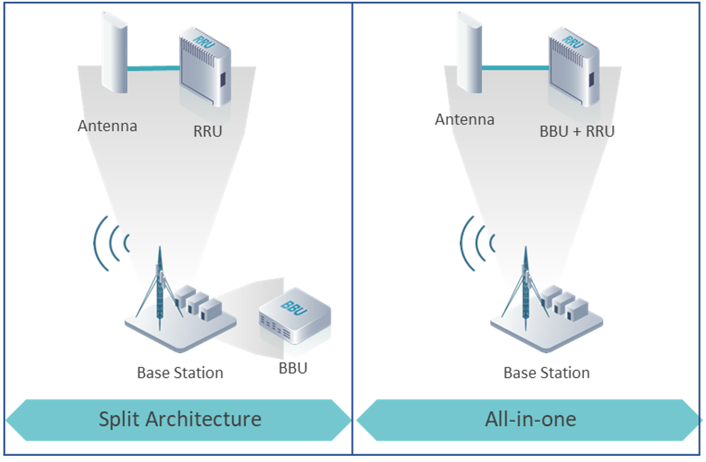
Figure 7. — Base station main components and configurations.
2.1.3 CPE type
The CPE has direct wireless communication with the BS, which grants it access to the network. There are two types of CPEs with slightly different operation and functionalities:
1. Indoor CPE
These CPEs allow an easy and quick self-installation by the customer inside its own house and into the power system as any standard electrical equipment (e.g., TV, fridge).
Indoor CPEs integrate in the same box the home router functionality which translates the signal sent from the BS into a Wi-Fi local network that provides internet connectivity to the house's inhabitants.
The main limitation of the indoor CPEs is that they can only be installed in homes that are close to the BS due to the heavy signal losses caused by the signal traversing walls.
2. Outdoor CPE
These CPEs are meant to be installed on the rooftop of the customer premises, on a point from which the BS can be seen. In this case, it is required that a field technician installs the CPE on the customer home.
Once the CPE is installed, a wired connection is required to communicate the outdoor CPE with an indoor home router, which is the one that creates the Wi-Fi local network to provide internet services to the house inhabitants.
Since the signal doesn't need to transverse any major obstacle (ideally), outdoor CPEs are an ideal option for homes that are located far from the BS.
Figure 8 displays the two types of CPE.
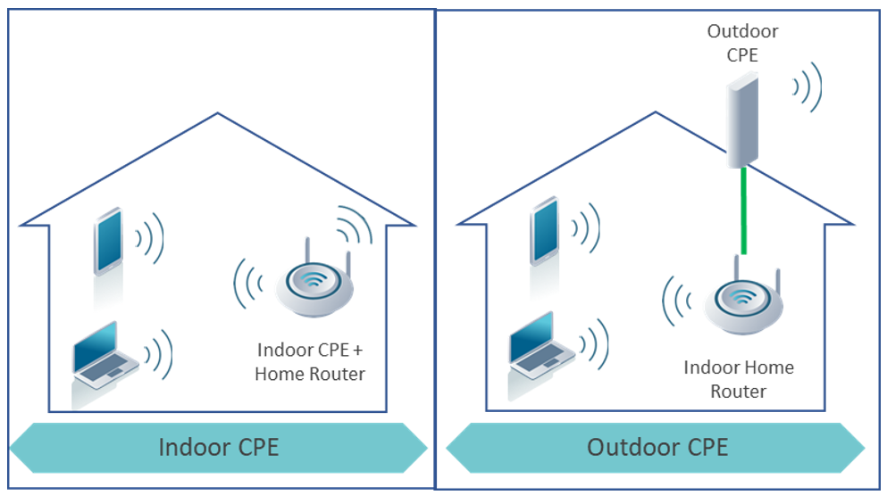
Figure 8. — Types of CPE.
2.1.4 Spectrum
Radio equipment (RRUs and CPEs) operate in a certain frequency band of the electromagnetic spectrum. The lower the frequency, the higher the coverage that can be achieved with a certain transmit power. Figure 9 describes the signal behavior depending on the spectrum band.
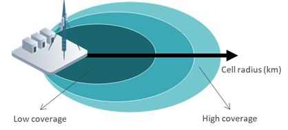
Figure 9. — Signal behavior depending on the spectrum band.
Suitable spectrum bands for Tribal Lands are the educational broadband service (EBS) spectrum in the 2.5 GHz band, the citizen broadband radio service (CBRS) spectrum in the 3.5 GHz band, and the unlicensed spectrum in the 5 GHz band. Details on how to obtain access to the spectrum and decide which bands to use are provided in the Business & Financial Plans module.
Once that the spectrum bands have been defined, it is important to define the strategy to use them. In general, the EBS spectrum should be used to cover the target areas where this spectrum is available. Then, in areas where EBS spectrum is not available or where additional capacity is required, the CBRS spectrum or 5 GHz spectrum should be used. In addition, notice that if using LTE
2.2 Backhaul Architecture
The network requires the implementation of backhaul links to provide connectivity from the base stations at the access sites to the core site.
Backhaul links can be deployed based on three different technologies and must consider technical and economical constraints as described in the subsections below.
2.2.1 Microwave technology
Microwave technology is based on wireless transmission at frequencies from 3 GHz to 80 GHz using high-capacity radio equipment and high-gain directional antennas. The use of these kind of antennas allows to deploy multiple links in the same frequency without interference.
A microwave link requires to install a radio equipment and antenna at each of the sites to be connected — some microwave equipment integrate the antenna and the radio in the same unit. In addition, it must exist line-of-sight (LOS) between the two antennas, this means that there aren't any obstacles in the direct path between the antennas. This LOS constraint is the main limitation for a MW link due to steep terrain conditions.
Using microwave links each access site is directly connected to the core site or to another access site creating star and chain topologies
MW equipment is impacted by spectrum regulations too as it requires to operate on certain frequency. For this reason, MW frequencies are also classified (like RAN bands) into unlicensed and licensed. Unlicensed bands that can be used in the US and that are suitable for Tribal networks are 5 GHz, 24 GHz and 60 GHz.
On the other side, licensed bands commonly used are 7 GHz, 11 GHz, and 15 GHz. To use a licensed band, you'd need to apply for a license with the FCC and pay for it ($510 per site, valid for 10 years plus application fees which is ~$1,000 per link)
When selecting the frequency for a microwave link the principle described in Figure 9 applies: the higher the frequency the lower the maximum distance of the link. In addition, it's worth noting that higher the frequency, the higher the link capacity. For example, a link in 60 GHz can easily achieve multi gigabit speeds while a link in 5 GHz will be around 500 Mbps.
Figure 10 displays the basic concept of MW backhaul.
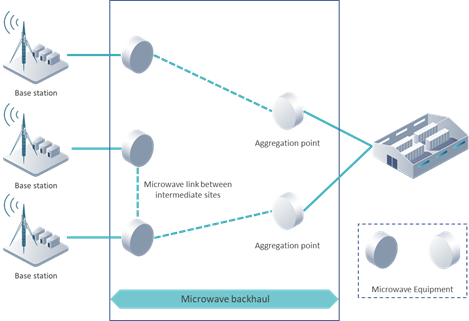
Figure 10. — High-level view of microwave backhaul architecture.
2.2.2 Fiber optic technology
Each BS is connected to an Ethernet switch (also known as cell site gateway — CSG). However, for the deployment of a FO network, the CSG must integrate an optical interface. This will allow the CSG to be connected (via a fiber link) to the core site (which also needs to integrate an optical interface on the switch or aggregation router).
A FO network provides a tremendous operational capacity to transport vast amounts of traffic data. However, its main limitation lies in the cost and logistics associated with its deployment and maintenance. Common costs associated to a FO network are, on average $10-$20/m for an aerial deployment (FO over posts) and $40-$60/m for a buried deployment.
Figure 11 displays the fiber backhaul architecture.
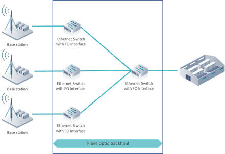
Figure 11. — High-level view of the fiber backhaul architecture.
2.2.3 Satellite technology
Satellite links utilize a very-small aperture terminal (VSAT) to provide connectivity to the access site using a satellite in the earth's orbit as a relay. The VSAT consists of a modem and an antenna specially designed for satellite communications. The VSAT is connected through a satellite link to a satellite hub from which the core network or the internet can be reached. This hub is a central unit that manages communications between several satellite links.
The only requirement to deploy a satellite link is that the BS is within the satellite's coverage. However, the costs associated with the satellite service fee are quite high ($300 to $3,000 monthly fee per Mbps). Thus, satellite should be considered as the last resort, mainly in networks with only one access site in remote areas where any other connectivity alternative exists.
Figure 12 displays the satellite link architecture.
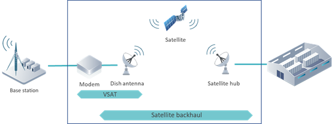
Figure 12. — High-level view of a satellite transport network.
2.2.4 Use of existing backhaul
To make an efficient use of the budget, it's important to consider if your Tribal Land already owns an existing transport network. If that's the case, the existing transport network may be reused and expanded, provided it has enough capacity to support traffic from the FWA network.
2.3 Core Architecture
The core site is the last piece in the FWA, which serves as a gateway to the internet. Equipment at the core site is in charge to handle the aggregated traffic generated by the RAN and manage each user session individually in terms of integrity and security.
As mentioned in section 2.2, different RAN technologies force the implementation of different core architectures. An LTE RAN architecture forces the deployment of an EPC + R&S Equipment (switch and aggregation router), while a TDMA RAN architecture only considers R&S Equipment.
2.3.1 Evolved packet core (EPC)
The EPC has the main function of providing the necessary equipment signaling (e.g., access control, service establishment, user management) and appropriate user data handling.
The architecture and elements of the EPC are standardized by the 3GPP, which allows its operation with any RAN equipment supplier. The main elements of the EPC are described below:
In addition to the EPC, R&S equipment is required at the core site to aggregate traffic coming from every BS of the RAN and direct it to the EPC. Specifics on R&S equipment are addressed in section 2.3.2.
The EPC can be deployed in a distributed or in a centralized manner.
Figure 13 displays a high-level overview of the EPC architecture, considering both distributed and centralized options.
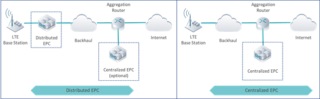
Figure 13. — EPC network architecture options.
2.3.2 TDMA core architecture
As mentioned before, the TDMA core network requires only a couple of routing and switching (R&S) elements:
Figure 14 displays a high-level overview of the TDMA core architecture.
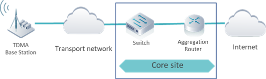
Figure 14. — TDMA core network architecture.
2.4 Internet Protocol (IP) Architecture
The typical protocols for the network equipment to intercommunicate between them are Ethernet and the IP. For this reason, these two protocols are mandatory implemented in the network architecture.
Main architecture considerations for Ethernet and IP protocols are described in the following subsections.
2.4.1 Virtual Local Area Network (VLAN)
The traffic isolation is key to achieve a better performance of the network because it enables the prioritization of traffic that is crucial to the network. One approach to traffic isolation is by implementing VLANs. VLANs are tags in user packets that indicates to the network to handle the data in the packets in an isolated fashion. When a user is assigned to a VLAN, they only can communicate to other users in the same VLAN thus reaching traffic separation. Another advantage of using VLANs on the network is to ease the pain of problem-solving at the network lower layers.
VLANs are configured in the switch, the aggregation router and all the equipment that handles an IP address.
2.4.2 Routing Protocols
A routing protocol enables the equipment of the network to know how to reach each other, thus allowing a proper function of the network. Two types of routing protocols are known: static and dynamic. The static ones are not recommended to be implemented on the network since they require a manual configuration and update of the routes to reach each part of the network. In contrast, the dynamic routing protocols calculate and update routes in an automated way.
The dynamic protocols recommended for most of the scenarios relevant to Tribal Lands are: Open Shortest Path First (OSPF) for the local network and Border Gateway Protocol (BGP) to interconnect to outside networks (i.e., internet).
2.4.3 IP Planning
For the network equipment to effectively communicate between them, each network element must be assigned one or more IP addresses. These IP addresses must be also organized to facilitate the network troubleshooting.
IP Planning is required to distribute, in a simple way, the available IP addresses across the network. The typical case is to use the version 4 of this protocol, most known as IPv4 as this is used worldwide.
There are three IP segments that are available to be used in any local network, in this case, the fixed wireless access network. Table 1 contains the three IP segments available for use:
|
IP segment |
Recommended use |
|
10.0.0.0 /8 |
Large sized networks. It considers hundreds of thousands of users, several services, and hundreds of R&S equipment. |
|
172.16.0.0 /12 |
Medium sized networks. It considers several tens of thousands of users, several services, and tens of R&S equipment. |
|
192.168.0.0 /16 |
Small sized networks or residential use. It considers several thousands of users and tens of R&S equipment. |
Table 1. Private IP networks for common use.
The selected segment is further subdivided and grouped by RAN, Core, Tx, Systems and R&S equipment according to the defined architecture. This subdivision is handled by the Network Architecture Wizard which is analyzed in section 3.2.
The final IP plan is defined during the detailed design phase which is out of the scope of the playbook.
2.5 Systems Architecture
The network systems architecture covers three main functional blocks: NMS, Billing System and Ticketing System. These systems can be implemented on premise (through physical servers in the network) or in the cloud (through a web server such as Amazon Web Services or Google Cloud). The decision point for on-premise vs cloud is the cost. While the on-premise option requires a higher initial inversion (regardless of the number of users), the cloud will require a monthly fee to operate (directly dependent of the number of users). Inevitably, this decision is exclusively based on the number of users and considering the less expensive one. This is handled automatically by the Network Architecture Wizard which is addressed in section 3.2.
2.5.1 Network Management System
The NMS is a tool that enables the network administrator to manage in a single platform, the equipment that is present in the network. Typical functionality for the NMS is monitoring of alarms and performance of the network and configuration management. The NMS, ideally, handles all the devices of the network independently of the vendor, version, or model.
2.5.2 Billing System
The billing system allows an easy way to check a status of the billing of the users. It can display the monthly usage per user, the total amount billed per user, the payment information and it handles the invoice generation. For tribal lands it must support 477 filing, to comply with FCC requirements.
2.5.3 Ticketing System
The ticketing system is the interface that allows the end-user to directly provide feedback to the network. This interaction usually begins when the user has a problem with the service, and it raises a ticket for the technicians to solve.